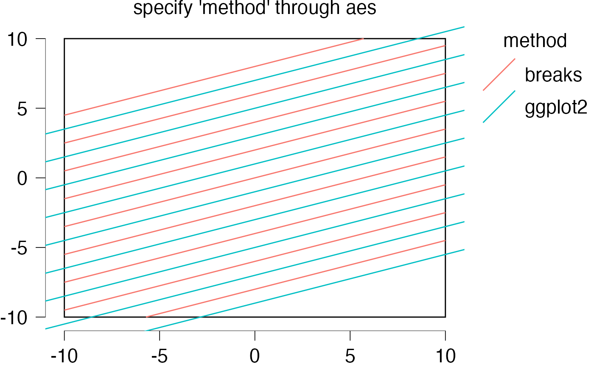
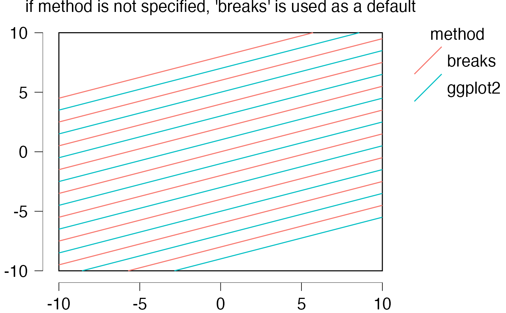
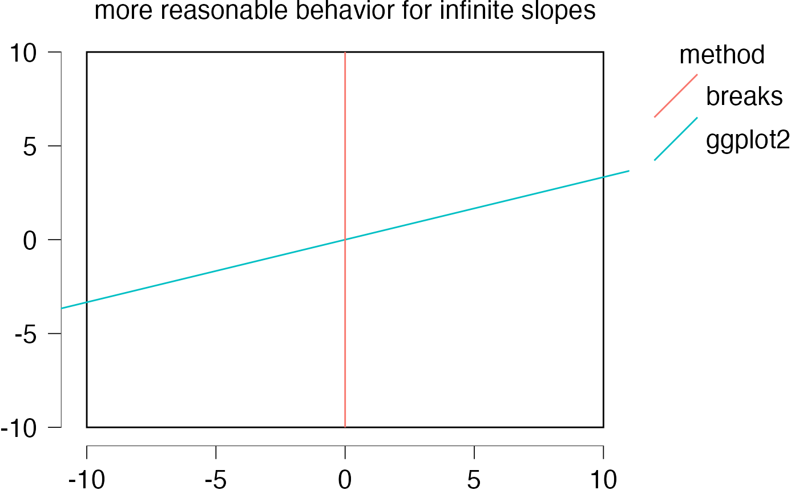
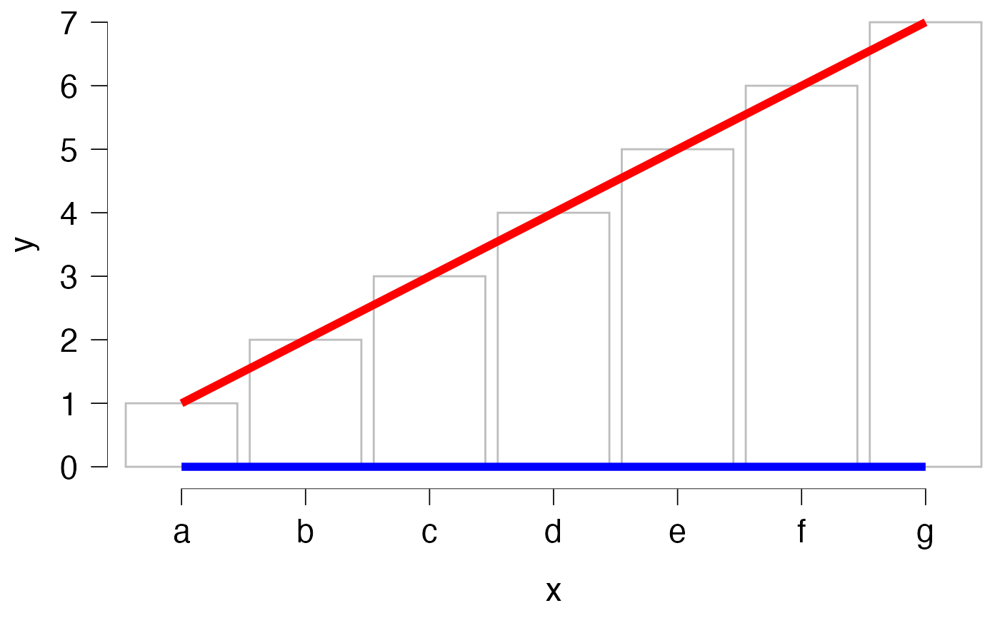
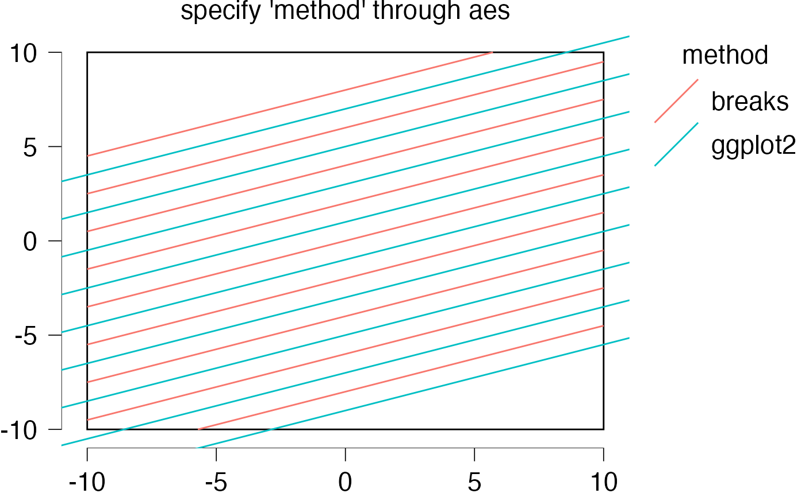
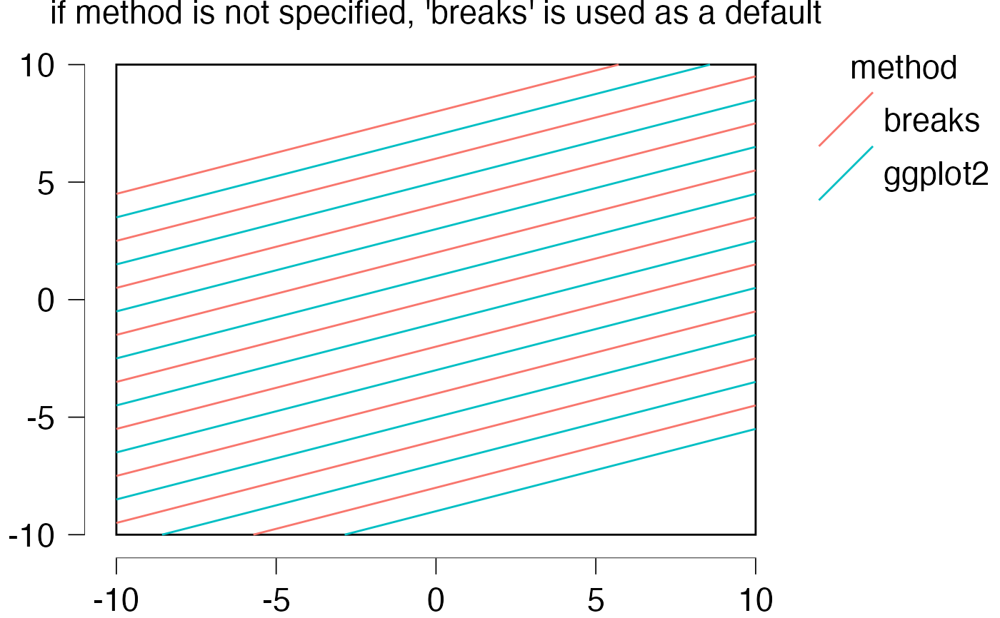
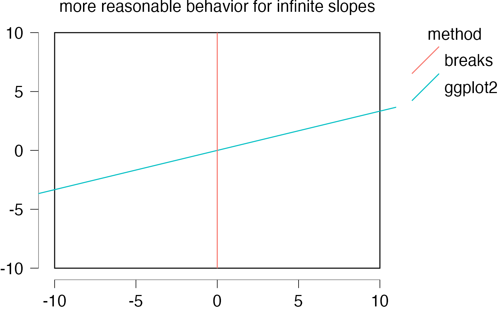
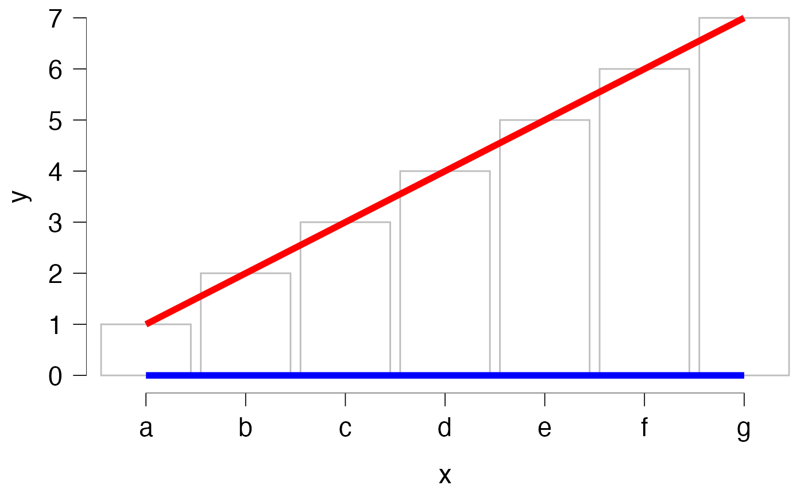

Add an abline that does not exceed the extrema of the axes breaks.
geom_abline2.RdThe default abline of ggplot2 will exceeds the breaks and goes from one set of limits to the next. This is a modified verions that respect one will not exceed the extrema of the x and y-breaks.
geom_abline2(
mapping = NULL,
data = NULL,
method = c("breaks", "ggplot2"),
...,
slope,
intercept,
na.rm = FALSE,
show.legend = NA
)Arguments
- mapping
- data
The data to be displayed in this layer. There are three options:
If
NULL, the default, the data is inherited from the plot data as specified in the call toggplot().A
data.frame, or other object, will override the plot data. All objects will be fortified to produce a data frame. Seefortify()for which variables will be created.A
functionwill be called with a single argument, the plot data. The return value must be adata.frame, and will be used as the layer data. Afunctioncan be created from aformula(e.g.~ head(.x, 10)).- method
Either "breaks" (default) to respect the extrema of the axes or "ggplot2" to obtain the ggplot2 behavior.
- ...
Other arguments passed on to
layer(). These are often aesthetics, used to set an aesthetic to a fixed value, likecolour = "red"orsize = 3. They may also be parameters to the paired geom/stat.- slope
controls the slope of the lines. If set,
data,mappingandshow.legendare overridden.- intercept
controls the intercept of the lines. If set,
data,mappingandshow.legendare overridden.- na.rm
If
FALSE, the default, missing values are removed with a warning. IfTRUE, missing values are silently removed.- show.legend
logical. Should this layer be included in the legends?
NA, the default, includes if any aesthetics are mapped.FALSEnever includes, andTRUEalways includes. It can also be a named logical vector to finely select the aesthetics to display.
Examples
library(ggplot2)
library(jaspGraphs)
dfRect <- data.frame(xmin = -10, ymin = -10, xmax = 10, ymax = 10)
basePlot <- ggplot(data = dfRect, aes(xmin = xmin, ymin = ymin, ymax = ymax, xmax = xmax)) +
geom_rect(fill = NA, color = "black") +
geom_rangeframe() +
themeJaspRaw(legend.position = "right")
slopes <- seq(-5, 5, length.out = 15)
ints <- seq(-2, 2, length.out = length(slopes))
basePlot +
geom_abline2(intercept = ints - 2, slope = slopes, method = "breaks", color = "green") +
geom_abline2(intercept = ints + 2, slope = slopes, method = "ggplot2", color = "red") +
ggtitle("specify 'method' manually")
 dfAbline <- data.frame(
intercept = -9:8,
slope = 0.35,
method = rep(c("ggplot2", "breaks"), 9)
)
basePlot +
geom_abline2(data = dfAbline, mapping = aes(
intercept = intercept, slope = slope, method = method, color = method
), show.legend = TRUE) +
ggtitle("specify 'method' through aes")

basePlot + geom_abline2(data = dfAbline, mapping = aes(
intercept = intercept, slope = slope, color = method
)) +
ggtitle("if method is not specified, 'breaks' is used as a default")

dfAbline <- data.frame(
slope = c(Inf, Inf),
intercept = 0,
method = rep(c("ggplot2", "breaks"), 2)
)
basePlot +
geom_abline2(data = dfAbline, mapping = aes(
intercept = intercept, slope = slope, method = method, color = method
), show.legend = TRUE) +
ggtitle("more reasonable behavior for infinite slopes")

# also works with discrete axes
df <- data.frame(
x = letters[1:7],
y = seq_along(letters[1:7])
)
ggplot(data = df, aes(x = x, y = y)) +
geom_bar(stat = "identity", fill = NA, color = "grey") +
geom_abline2(intercept = 0, slope = 0, size = 2, col = "blue") +
geom_abline2(intercept = 0, slope = 1, size = 2, col = "red") +
scale_y_continuous(breaks = 0:7) +
geom_rangeframe() +
themeJaspRaw()
#> Warning: Using `size` aesthetic for lines was deprecated in ggplot2 3.4.0.
#> ℹ Please use `linewidth` instead.

dfAbline <- data.frame(
intercept = -9:8,
slope = 0.35,
method = rep(c("ggplot2", "breaks"), 9)
)
basePlot +
geom_abline2(data = dfAbline, mapping = aes(
intercept = intercept, slope = slope, method = method, color = method
), show.legend = TRUE) +
ggtitle("specify 'method' through aes")

basePlot + geom_abline2(data = dfAbline, mapping = aes(
intercept = intercept, slope = slope, color = method
)) +
ggtitle("if method is not specified, 'breaks' is used as a default")

dfAbline <- data.frame(
slope = c(Inf, Inf),
intercept = 0,
method = rep(c("ggplot2", "breaks"), 2)
)
basePlot +
geom_abline2(data = dfAbline, mapping = aes(
intercept = intercept, slope = slope, method = method, color = method
), show.legend = TRUE) +
ggtitle("more reasonable behavior for infinite slopes")

# also works with discrete axes
df <- data.frame(
x = letters[1:7],
y = seq_along(letters[1:7])
)
ggplot(data = df, aes(x = x, y = y)) +
geom_bar(stat = "identity", fill = NA, color = "grey") +
geom_abline2(intercept = 0, slope = 0, size = 2, col = "blue") +
geom_abline2(intercept = 0, slope = 1, size = 2, col = "red") +
scale_y_continuous(breaks = 0:7) +
geom_rangeframe() +
themeJaspRaw()
#> Warning: Using `size` aesthetic for lines was deprecated in ggplot2 3.4.0.
#> ℹ Please use `linewidth` instead.
